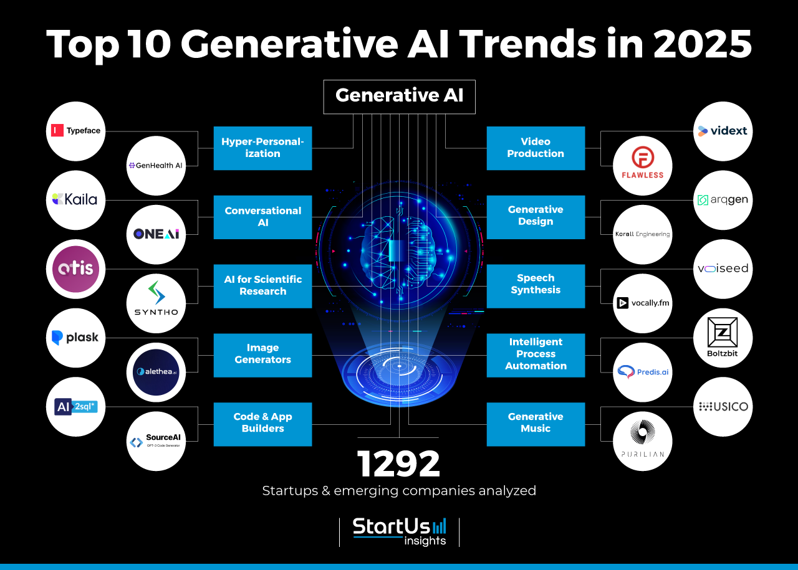

Introduction aux tendances technologiques
Chaque année, de nouvelles innovations transforment la manière dont nous utilisons la technologie. Voici cinq tendances marquantes pour 2024.
1. Intelligence Artificielle (IA)
L'IA continue de progresser, avec des applications dans la santé, la finance et l'éducation. En 2024, elle devient plus accessible grâce aux technologies comme le traitement du langage naturel.
2. Cybersécurité avancée
Face à l’augmentation des cyberattaques, des mesures de sécurité basées sur l'IA sont mises en place pour identifier et prévenir les menaces.
3. Technologies de réalité augmentée
La réalité augmentée enrichit l’expérience utilisateur en intégrant des éléments virtuels dans le monde réel, utile dans le commerce et l’éducation.